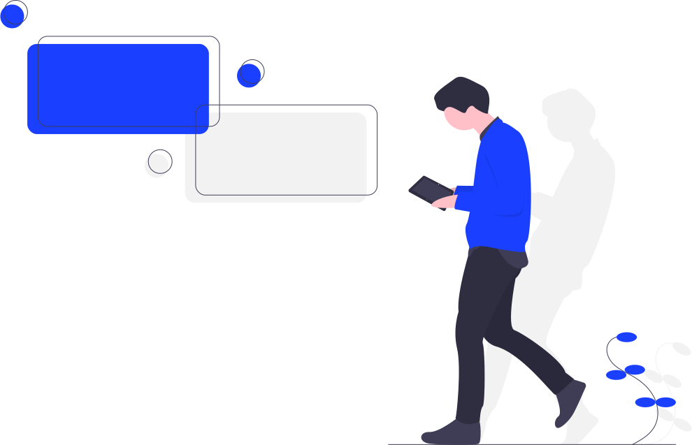

<div>
    <div>
        <div>
            <button class='goBack'>
                
            </button>
        </div>
        <table>
            <tr>
                <td col-12>
                    <strong>Logic Exercise</strong>
                </td>
            </tr>
            <tr>
                <td col-12>
                    <p>João e Maria vão jogar um jogo de cartas que podem ser de números [1, 10]. Cada jogador pode ter no máximo 5 cartas na mão em qualquer momento. 
                        Os dois jogadores começam com as mãos vazias. 
                        É sorteada aleatoriamente uma carta de um baralho infinito. 
                        Se o jogador possuir a carta cujo número foi sorteado em mãos, ele ganha 1 ponto. 
                        Se não possuir a carta, deverá adicioná-la à sua mão, descartando alguma carta anterior se já possuir 5 cartas. 
                        Cada jogador quer adotar uma estratégia diferente de descarte de cartas:
                        </p>
                        <ul>
                            <li> João descarta a carta que tem o maior tempo sem ser sorteada</li>
                            <li> Maria descarta a carta que está há mais tempo em sua mão</li>
                        </ul>
                </td>
            </tr>
            <tr>
                <td col-12>
                    <p>Sendo joaoPoints e mariaPoints a pontuação de cada jogador, qual será o valor de |joaoPoints - mariaPoints| depois dos 2 milhões de rounds especificados no arquivo rounds.json?</p>
                </td>
            </tr>
            <tr>
                <td>
                    <b>|joaoPoints| - |mariaPoints| = {{resultado}}</b>
                </td>
            </tr>
        </table>
        <div>
            
        </div>
    </div>
</div>